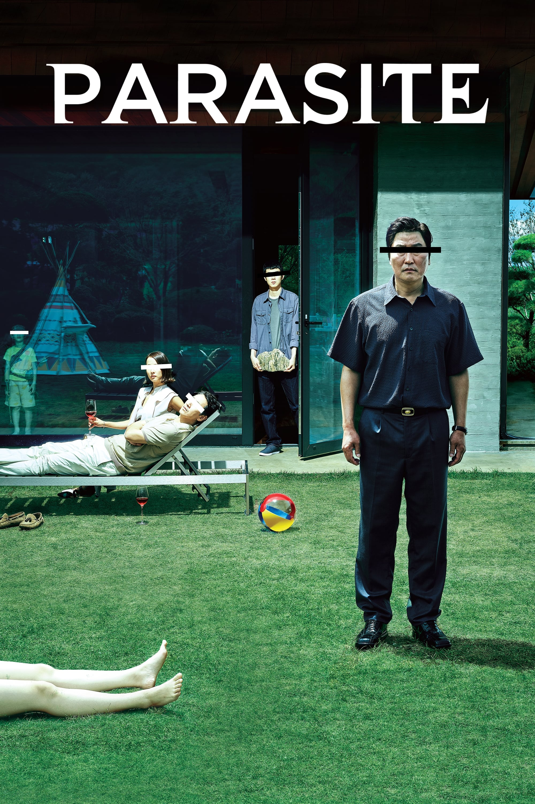

My Favorite Movies
The Godfather
In 1945, the New York City Corleone family don, Vito Corleone, listens to requests during his daughter Connie's wedding to Carlo Rizzi. Vito's youngest son Michael, a Marine who has thus far stayed out of the family business, introduces his girlfriend, Kay Adams, to his family at the reception. Johnny Fontane, a popular singer and Vito's godson, seeks Vito's help in securing a movie role.

The Parasite
The Kim family lives in a semi-basement flat (banjiha) in Seoul, have low-income jobs, and struggle for money. Min-hyuk, a university student, gives the family a scholar's rock meant to promise wealth. Leaving to study abroad, he suggests that the Kims' son, Ki-woo, pose as a university student to take over his job as an English language tutor for Da-hye, the daughter of the rich Park family.
I Want To Eat Your Pancreas
A high school student discovers one of his classmates, Sakura Yamauchi, is suffering from a terminal illness. This secret brings the two together, as she lives out her final moments.She was about to die. and at that time, Sakura arrived, and she saw that Haruki had read it all. But Haruki doesn't't have any friends to tell them about Sakura's disease. So it doesn't matter much.